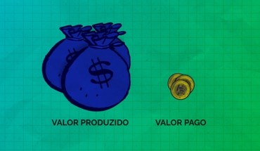
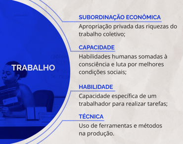

Emancipação e subalternidade
Uma das maneiras de aprofundar a análise de uma política, de um programa ou de um projeto, assim como de suas práticas decorrentes, é apropriar-se dos conceitos que lhes embasam. Vamos começar por dois relativamente pouco conhecidos, mas de fundamental importância para distinguir as propostas de políticas públicas: emancipação e subalternidade.
A emancipação diz respeito à liberdade e igualdade de direitos de indivíduos e grupos sociais. Emancipar-se significa sair do subjugo, da opressão, e tornar-se plenamente livre, ter voz e se fazer representar. Já a subalternidade refere-se à condição de indivíduos ou grupos sociais oprimidos, marginalizados, sem voz ou representação nas estruturas de poder.
Estes conceitos são essenciais para compreender as relações e lutas sociais nos diversos contextos históricos e espaciais, que resultarão em direitos e, por conseguinte, nas políticas públicas que os garantem.
A partir da Revolução Francesa , a ideia de garantir, política e juridicamente, a liberdade e direitos individuais ganha força, mas isso acontece de forma limitada e parcial: as classes trabalhadoras, as mulheres e as pessoas não europeias não estavam contidas nessa proposta de cidadania exclusiva para homens europeus detentores de riquezas. Aqui se torna fundamental a distinção entre emancipação política e emancipação humana. Arefere-se à liberdade do indivíduo dentro do Estado, enquanto a envolve a superação das condições materiais que perpetuam a opressão e a alienação.
Os grupos subalternos são compostos pela classe trabalhadora (operários, camponeses, trabalhadores do serviço privado e público, povos originários e tradicionais etc, ou seja, aqueles que vivem do seu próprio trabalho) e os demais excluídos (imigrantes, marginalizados, entre tantos outros) que sofrem a opressão econômica, social, política e cultural dos grupos dominantes. É extremamente importante reconhecer que outras formas de opressão perpassam os subalternos: de gênero, étnico-racial, sobre as pessoas jovens, idosas, com deficiência, LGBTQIAN+ e tantas outras. Em resumo, todas as classes, grupos, frações e segmentos que não podem produzir e usufruir livremente seu mundo material e espiritual estão subordinados economicamente (direta ou indiretamente) e submetidos às formas de submissão. Em outras palavras, são impedidos de exercer sua autonomia e de produzir sua própria história.
Embora a história dos grupos subalternos seja fragmentada e episódica, com momentos de rebelião e de insurgência, seguidos ou antecedidos por acomodação e aceitação da ordem vigente, a experiência da humanidade está repleta de exemplos de como um projeto comum de sociedade pode ser forjado. A dominação não é um processo isento de contradições e falhas, e em muitas vezes as brechas são aproveitadas para dar um passo adiante na mudança social.
Os subalternos, embora excluídos total ou parcialmente de direitos, estão integrados ao sistema hegemônico, de forma passiva, produtos das relações que moldam o Estado moderno. A falta de consciência social e a dificuldade de reconhecerem sua própria história, importância e necessidade de emancipar-se faz com que a superação da subalternidade não ocorra como ato de vontade individual ou espontânea.
Isto não quer dizer que a responsabilidade pela passividade seja dos subalternos. Um escravo não pode ser culpado pela sua própria escravidão, mas a condição de escravo é tão degradante que, por vezes, ele se esquece que a liberdade existe e que por ela vale lutar. Nos tempos atuais, os subalternos também sofrem, de um lado, com a desesperança (“sempre foi assim”, “sempre haverá pobres”), e, do outro, com as falsas promessas de emancipação econômica (”empreendedorismo”, “loterias”); além disso, a indústria do entretenimento torna todos “iguais” quanto aos gostos culturais. Por esses motivos, a luta pela emancipação requer ações específicas e constantes no sentido de construir capacidades de autodireção e autonomia destes grupos sociais subalternos, o que inclui suas vozes e experiências.
A emancipação, entretanto, não se restringe à dimensão econômica, mas inclui necessariamente a educação e a cultura, pois estas são utilizadas como ferramentas para manter a subalternidade. Contudo, é possível “trocar o sinal” e utilizar processos educacionais e culturais para promover a emancipação, ajudando os indivíduos e grupos sociais a desenvolverem uma consciência crítica sobre sua posição na sociedade e a se organizarem e articularem estratégias em prol de seus interesses.
Neste sentido os docentes e demais trabalhadores da educação podem tornar-se intelectuais orgânicos, pessoas oriundas das classes subalternas e que desempenham um papel crucial na formação da consciência, na superação da alienação e na luta pela emancipação.
Trabalho
Quando falamos de subordinação econômica, estamos nos referindo ao uso do trabalho coletivo e à apropriação privada das riquezas que ele produz.
Título: Força de trabalho
Fonte: Schüler (2023d).
Elaboração: Prosa (2024b).
Mesmo aqueles que trabalham de forma familiar ou cooperativa que não são explorados na produção são explorados no processo de circulação (transporte e comercialização) das.
As riquezas materiais e imateriais são fruto do trabalho humano. Por meio dele é que os recursos naturais e culturais são transformados em produtos que satisfaçam as necessidades ou desejos humanos, sejam eles naturais (imprescindíveis para a reprodução física individual e da espécie) ou sociais, referentes à reprodução social e cultural que se desenvolvem historicamente. Deste modo, o valor do uso do trabalho humano vai além de sua função econômica, envolve a produção de relações sociais e culturais; ou seja, constitui uma vasta e complexa teia de relações, que denominamos “mundo do trabalho”.
O valor de troca do trabalho humano é representado pelo salário, que é o preço pago pela força de trabalho, mas o salário não exprime a totalidade do valor do trabalho produzido. O custo (valor pago) da força de trabalho é sempre menor que o valor que ela produziu, enquanto a parte excedente – na maioria das vezes, muito maior que o salário – é apropriada por quem adquiriu a mercadoria de trabalho.

Título: Mais-valia
Fonte: Avelludo (2024) e Mcol (2007).
Elaboração: Prosa (2024c).
Os valores de uso e de troca do trabalho vão se modificando pelas condições sociais e históricas em que o trabalho é realizado, sendo construções sociais que constituem a base da economia. Porém, o trabalho também gera relações sociais, conhecimento e cultura, e estas, por sua vez, geram os processos organizativos e a valorização social do trabalho em si, que podem estar submetidos à discriminação social, de gênero, étnico-racial, etária, entre outras, no âmbito laboral. Esse processo acarreta na redução do valor de troca do trabalho, ainda que o valor de uso permaneça o mesmo.
Força de Trabalho
A potencialidade dos trabalhadores de produzir riquezas é denominada capacidade, a qual engloba as habilidades humanas e, em um sentido mais amplo, a consciência e a faculdade dos trabalhadores de se organizarem e lutarem por seus direitos. Deste modo, não se resume ao uso das habilidades técnicas, mas também abrange a crítica das condições sociais e políticas que afetam a classe trabalhadora.
A habilidade é vista como a capacidade específica de um trabalhador para realizar tarefas. Ao buscar aumentar ao máximo a eficiência e a produtividade, as classes dominantes introduzem inovações tecnológicas (também fruto do trabalho humano), levando as habilidades dos trabalhadores a serem cada vez mais especializadas e, com isto, ocorrendo a alienação do produtor em relação ao produto final. Entretanto, a habilidade também é ligada à educação e à formação cultural dos trabalhadores, sejam elas formais ou informais. A educação, nesta perspectiva, é essencial para o desenvolvimento de habilidades tanto para executar tarefas, como para compreender a opressão e articular estratégias de emancipação.
A técnica está relacionada ao uso de ferramentas e métodos na produção, e é uma extensão da força de trabalho. Entretanto, as inovações tecnológicas modificam as relações e as condições de trabalho, uma vez que a técnica não é neutra e interfere diretamente na capacidade e na habilidade dos trabalhadores. Em outras palavras, a técnica não é apenas instrumento, é também espaço de luta, pois as formas como são aplicadas e disseminadas podem reforçar ou questionar a dominação, diminuir ou aumentar a autonomia.

Título: Elementos do trabalho
Fonte: Schüler (2023e).
Elaboração: Prosa (2024d).
Há fortes evidências de que a técnica, por si só, não é suficiente para aumentar o controle e a produtividade no ambiente de trabalho. A escolha tecnológica deve ser complementada por uma organização do trabalho que leve em consideração os fatores sociais, culturais e políticos. A relação entre capital e trabalho, assim como a capacidade dos trabalhadores de introduzir novas tecnologias, são imprescindíveis para garantir seu controle sobre o processo de trabalho.
O trabalho possui um caráter epistemológico fundamental, na medida em que, por meio dele, as pessoas produzem conhecimento sobre o mundo e sobre si mesmos. O trabalho, como mencionado anteriormente, é uma atividade prática que implica a interação direta com a realidade material e social. Ao executar tarefas, solucionar problemas e lidar com situações concretas, os trabalhadores desenvolvem uma compreensão empírica do mundo, adquirindo conhecimentos tácitos e habilidades práticas.
No local de trabalho (“chão de fábrica”, “chão de escola” etc.), por meio da observação, da experimentação e da troca de conhecimentos com os demais trabalhadores (mais experientes ou não), o aprendizado das técnicas, dos valores, das relações e da cultura de trabalho é contínuo, com construção e reconstrução de saberes.
O trabalho expressa a relação dialética entre teoria e prática, com a prática exigindo a mobilização de conhecimentos teóricos e, simultaneamente, retroalimentando e transformando a teoria. Neste processo, ocorre a produção de conhecimento.
Em uma perspectiva crítica, pode-se falar que os modos de conhecer, propiciados pelo trabalho, contrapõem-se às formas hegemônicas de produção e apropriação dos conhecimentos e dos saberes. Em outras palavras, são epistemologias dissidentes, contestadoras e com forte influência na formação de identidades e unidade na ação. A estas formas, somam-se as experiências formais de educação, a transmissão de saberes ancestrais e o conhecimento codificado (manuais, símbolos etc.), obtidos das mais diversas formas e em momentos diversos na vida do trabalhador.